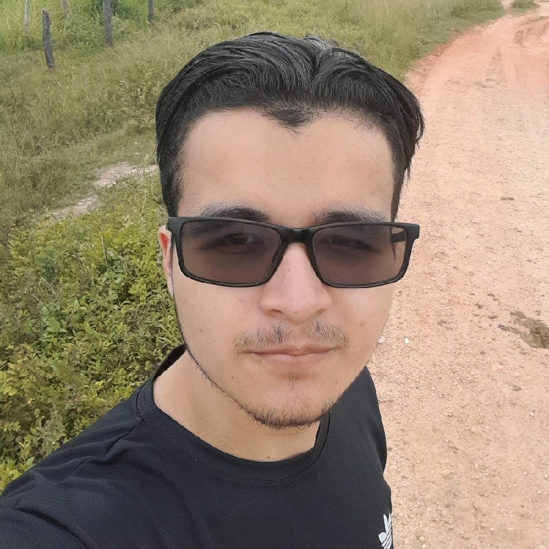

Portfólio Profissional
Meu primeiro site criado para apresentar meus trabalhos, com design moderno simples. ja fiz um pouco do basico codigos python e gosto da area de programação.
Tecnologias: HTML, CSS, JavaScript e python.
Meu projeto pessoal!
Sou desenvolvedor web com foco em Front-end. Apaixonado na area de tecnologia, eu sei um pouco de design e resolvo questões com resoluções criativas. Estou Sempre buscando aprender mais e contribuir com projetos que impactem positivamente o mundo digital. Espero ajudar a empresa a crescer, sou muito fã de jogos digitais e esporte. gostei muito da area de Front-end espero ser um grande profissional algum dia.
Meu primeiro site criado para apresentar meus trabalhos, com design moderno simples. ja fiz um pouco do basico codigos python e gosto da area de programação.
Tecnologias: HTML, CSS, JavaScript e python.